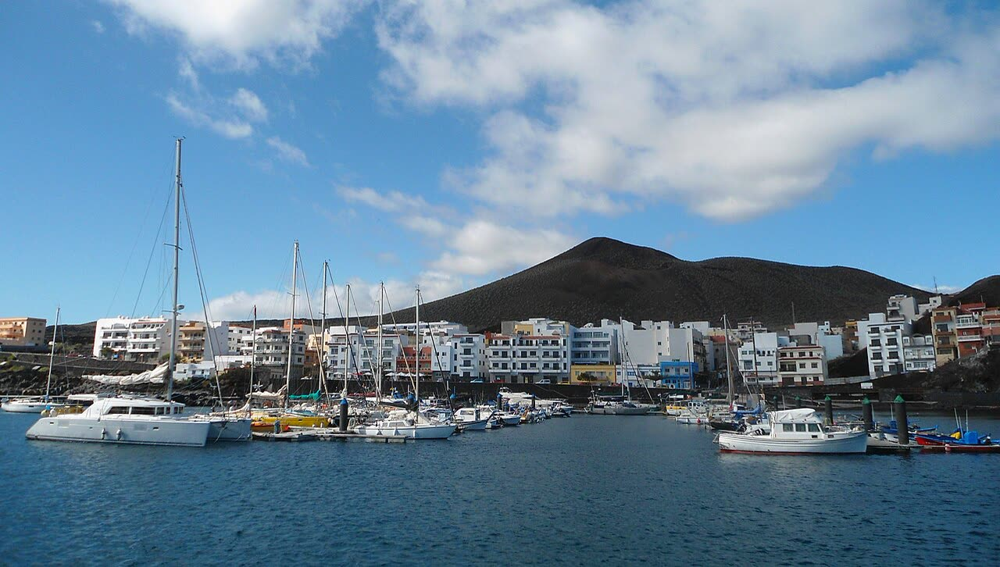

Canarie, oltre 4.000 migranti in sei giorni: El Hierro dichiara l'emergenza
L'emergenza a El Hierro è vera, l'«invasione» no: Madrid paga il Senegal ma non dice quanti rimpatri fa.
Redazione Contrappunto · aggiornato il 06.11.2026


Le Canarie sono un arcipelago spagnolo nell'Atlantico, davanti alla costa dell'Africa occidentale: è la porta d'ingresso in Europa per chi parte in barca dall'Africa occidentale, soprattutto dal Senegal. Dal 1° al 6 novembre 2026 ci sono arrivate più di 4.000 persone su 46-49 barche, la maggior parte a El Hierro, l'isola più a sud-ovest e la meno popolata delle Canarie. Il 6 novembre il Cabildo, il governo dell'isola, ha dichiarato con un decreto l'emergenza sociale, e il ministro dell'Interno spagnolo Fernando Grande-Marlaska era a Dakar a chiedere al Senegal più controlli. Conta perché la Spagna vota il 29 novembre e perché la rotta riaccelera mentre in Italia gli sbarchi sono più che dimezzati.
Vedi di più: 8 parole spiegate, cosa si racconta
Cosa si raccontaLa versione dominante è quella di un'isola travolta. ABC, quotidiano di destra, titola «Canarias, desbordada» (le Canarie traboccano), mette 4.587 arrivi «a El Hierro» e parla di «avalancha migratoria» e di un governo centrale che si disinteressa. La Vanguardia, di centro, titola «Alarma en Canarias» e scrive di quasi 3.900 persone arrivate solo a El Hierro. El País, di centro-sinistra, racconta una rotta che accelera: più di 3.200 arrivi in cinque giorni, con i dati dell'anno e le misure del governo. Anadolu, agenzia dello Stato turco, racconta la notte (più di mille persone, un morto) e la protesta dei residenti di La Restinga. Sullo sfondo c'è la campagna elettorale: il PP canario (Partido Popular, centrodestra, all'opposizione a Madrid) parla di «invasión», il PSOE (Partido Socialista, centrosinistra, al governo) risponde con «populismo, demagogia, racismo y xenofobia». [ABC] [La Vanguardia] [El País] [Anadolu Agency]
- Cayuco
- Grande barca di legno, simile a quelle da pesca dell'Africa occidentale, usata per la traversata atlantica: ne arrivano anche con più di 200 persone a bordo (il 6 novembre a El Hierro uno ne portava 235).
- El Hierro e La Restinga
- El Hierro è l'isola più a sud-ovest delle Canarie. La Restinga è il suo piccolo porto di pescatori, dove Salvamento Marítimo porta a terra quasi tutte le barche che arrivano sull'isola.
- Cabildo
- Il governo di ciascuna isola delle Canarie. Non ha competenze sull'immigrazione, che spettano allo Stato; il presidente del Cabildo di El Hierro è Alpidio Armas.
- CATE
- Centro de Atención Temporal de Extranjeros: il centro dove passano per primi gli stranieri appena sbarcati. Quello di El Hierro è a San Andrés; un nuovo CATE a Granadilla, a Tenerife, dovrebbe aprire con poco più di 1.000 posti.
- Junta de Seguridad
- La riunione di coordinamento sulla sicurezza tra lo Stato spagnolo e il Governo delle Canarie. Il Governo canario la chiede da settembre; l'Interno non ha ancora fissato una data.
- Salvamento Marítimo
- Il servizio pubblico spagnolo di soccorso in mare. I suoi numeri contano le persone soccorse e portate a terra, che possono differire da quelle registrate all'arrivo dalla polizia.
- Balance quincenal
- Il bilancio ufficiale degli arrivi irregolari che il Ministero dell'Interno spagnolo pubblica ogni quindici giorni. Quello di novembre uscirà con i dati al 15 novembre: per ora le cifre del mese sono conteggi provvisori.
- Patto UE su migrazione e asilo
- L'insieme di regole comuni dell'Unione europea su controlli alle frontiere, domande d'asilo, accoglienza e redistribuzione dei richiedenti asilo tra i paesi. Approvato nel 2024, si applica dal 12 giugno 2026.
- Dal 1° al 6 novembre alle Canarie sono arrivate tra 4.069 e 4.587 persone, a seconda di chi conta, la maggior parte a El Hierro.
- Il Cabildo dell'isola ha dichiarato l'emergenza sociale; il ministro Grande-Marlaska era a Dakar a chiedere più controlli al Senegal.
- La Spagna vota il 29 novembre.
ABC titola «Canarias, desbordada» e mette 4.587 migranti «a El Hierro». La cifra è del Governo delle Canarie, che chiede l'emergenza, ed è il totale dell'arcipelago: a El Hierro sono arrivate 35 barche su 49. La Vanguardia scrive «Alarma» e dà quasi 3.900 persone alla sola El Hierro, un conteggio che nessun dato EFE letto riproduce. El País è il più preciso: più di 3.200 in cinque giorni, con i numeri dell'anno. Anadolu racconta la notte e la protesta di La Restinga, ma i suoi «dozens» di manifestanti erano una quindicina. [1] [5] [2] [3] [4] [18]
Cosa regge: a El Hierro l'emergenza c'è. Più di 8.000 arrivi in cinque settimane secondo il Cabildo, centri delle isole grandi pieni, centinaia di persone a dormire in un capannone. E la rotta riaccelera da luglio: 9.619 arrivi in quattro mesi, contro 2.778 un anno fa. Cosa non regge è l'«invasión» del PP: per il bilancio dell'Interno riportato da EFE ed Europa Press, al 31 ottobre le Canarie sono sotto il 2025 (13.327 contro 14.099) e il 2024 (34.087, Anadolu). Si vota il 29 novembre, e ognuno usa il numero che gli serve. [12] [18] [3] [8] [14] [9] [16] [4]
Il confronto con l'Italia va fatto con le pinze. Da noi gli sbarchi sono crollati (27.242 contro 60.650 nel 2025) e a ottobre le sole Canarie (6.194) hanno superato l'Italia (3.917). Ma sono rotte diverse, con persone diverse, contate in modo diverso: non è la prova che un modello funziona e l'altro no. [25] [9]
Chi paga è chiaro. Un'isola piccola e un paese di pescatori, agenti e soccorritori «al límite», e chi muore in mare: almeno sette persone tra il 2 e il 6 novembre secondo il conteggio di Europa Press, che include cinque persone gettate in mare secondo i sopravvissuti. [19] [2] [16]
Il nostro giudizio: Madrid fa la cosa giusta a metà. Pagare il Senegal serve dove si controlla la costa: per El País da lì parte la maggior parte di chi arriva a El Hierro. Temiamo che un controllo più stretto sposti ancora le partenze, ma è un'ipotesi. Gestire alla fonte vuol dire anche riportare indietro in fretta chi non ha titolo per restare e aprire vie legali per chi viene a lavorare. Manca il numero che decide tutto: quanti rimpatri effettivi dalle Canarie nel 2026. Non lo dà il governo e nelle fonti che abbiamo letto non compare: finché manca, i 500.000 euro al Senegal restano un annuncio. [20] [3]
La verifica punto per punto29 passaggi, 25 fonti
Qui sotto ogni cosa scritta sopra, una per una, con le fonti. Confermato: lo dice un documento originale o più fonti lette. Plausibile: lo riportano fonti serie, ma non abbiamo letto l'originale. Discordante: le fonti danno numeri diversi, e diciamo quali. Ipotesi e Opinione sono il nostro ragionamento, separato dai fatti.
Quanti sono · i numeri contesi
Il totale dei sei giorni dipende da chi conta e quando: più di 3.200 in cinque giorni (El País lo scrive accanto ai 1.021 e non dice se li includa; il dispaccio EFE dice che esclude la notte) più 1.021 nella notte sul 6 (Salvamento e Interno, via EFE); 4.069 la mattina del 6 (Policía Canaria); 4.587 il pomeriggio (Governo canario). Il dato dell'Interno arriverà con il bilancio al 15 novembre. Se il 3.200 di El País includesse già la notte, il «più di 4.200» di La Vanguardia, che li somma, conterebbe due volte quelle persone.
Il 4.587 del titolo di ABC è la stima del Governo canario per tutto l'arcipelago, non solo «a El Hierro», dove le barche erano 35 su 49.
Dalla sera del 5 alla mattina del 6 novembre Salvamento Marítimo ha portato a terra 1.021 persone; una è morta.
El Hierro: 2.300 persone in cinque giorni secondo EFE, più di 3.000 per il Cabildo includendo la mattina del 6. Il «casi 3.900» è solo di La Vanguardia: nessun dato EFE letto lo riproduce.
Morti di novembre, nessun bilancio ufficiale: uno nella notte sul 6 per Salvamento, 2 più 2 dispersi per ABC, almeno 7 dal 2 novembre per Europa Press (due corpi e cinque gettati in mare, secondo i sopravvissuti, a Lanzarote).
A ottobre alle Canarie sono arrivate 6.194 persone secondo l'Interno, quasi cinque volte l'ottobre 2025 (1.251). Il 6.164 di La Vanguardia è probabilmente un refuso.
La Vanguardia chiama la rotta «la más letal del mundo», senza fonte. Per Caminando Fronteras è la più mortale delle frontiere spagnole; per l'OIM la più letale verso l'Europa è il Mediterraneo centrale.
Il quadro · la rotta riaccelera, l'anno no
La rotta riaccelera da luglio: 3.708 arrivi nel primo semestre (−67%), 9.619 da luglio a ottobre contro 2.778 nel 2025. El País scrive per errore «un 77% menos», poi 67%.
Secondo il bilancio dell'Interno riportato da EFE ed Europa Press, al 31 ottobre le Canarie contano 13.327 arrivi contro 14.099 nel 2025 (−5,5%). Nello stesso periodo del 2024 erano 34.087 (dato di Anadolu); 46.843 è il totale dell'intero 2024.
Secondo El País la maggior parte delle persone arrivate a El Hierro è partita dal Senegal. Il presidente del Cabildo, Alpidio Armas, dice che l'isola è la rotta più diretta per sfuggire ai controlli in mare. Il conteggio EFE a El Hierro, 2.300 persone dal 1° al 5 novembre, include 307 minori e 11 neonati.
Cosa fa Madrid · Senegal e traghetti
Il 6 novembre a Dakar Grande-Marlaska ha chiesto al Senegal più controlli e ha annunciato 500.000 euro per la sua Marina. Per il Ministero, nel 2026 il Senegal ha intercettato 64 barche e più di 4.000 persone.
Il 6 novembre lo Stato ha portato 350 persone a Tenerife in traghetto, con altre 350 previste; i centri di Tenerife e Gran Canaria sono pieni. Il CATE di Granadilla, poco più di 1.000 posti, dovrebbe aprire tra il 6 e il 7, secondo Armas.
Cosa chiedono le Canarie · emergenza e polizia
Nieves Lady Barreto, consigliera del Governo canario, ha chiesto per lettera a Grande-Marlaska rinforzi di polizia a El Hierro e la Junta de Seguridad, chiesta già a settembre e ottobre.
Il 6 novembre il Cabildo di El Hierro ha dichiarato con decreto l'emergenza sociale: più di 8.000 arrivi in cinque settimane.
Fernando Clavijo, presidente del Governo delle Canarie, chiama la situazione «dramática», con il CATE pieno, e ha annunciato una telefonata con Pedro Sánchez, presidente del governo spagnolo, per chiedere l'emergenza. L'esito non è noto.
Il presidente canario Clavijo chiama El Hierro «absolutamente insostenible», ma il rialzo «normal»: la rotta dal Nord Africa «se ha cerrado». Sul Patto UE prevede più burocrazia e trattenimenti.
Chi paga · l'isola, gli agenti, chi muore in mare
Il 6 novembre una quindicina di residenti di La Restinga ha protestato sul molo: le barche accumulate intralciano i pescherecci. Anadolu scrive «dozens of protesters».
I sindacati di polizia dicono che gli agenti a El Hierro sono «al límite»; fonti sindacali di Salvamento parlano di equipaggi esausti.
Si vota il 29 novembre · la campagna
La Spagna vota il 29 novembre 2026; la campagna ufficiale va dal 13 al 27 novembre.
Manuel Domínguez, leader del PP canario (centrodestra, opposizione a Madrid) e vicepresidente del Governo di Clavijo, parla di «invasión». Ángel Víctor Torres, ministro del PSOE (centrosinistra, al governo), risponde che è «mentira» che si possano rimpatriare tutti da un giorno all'altro, e parla di «populismo, demagogia, racismo y xenofobia».
Il confronto con l'Italia
Italia, Viminale: 27.242 sbarchi dal 1° gennaio al 6 novembre, contro 60.650 nel 2025. A ottobre 3.917 in Italia e 6.194 alle Canarie, primo mese del 2026 con le Canarie sopra l'Italia. Conteggi diversi.
Il confronto non dimostra che il modello italiano funziona e quello spagnolo no: sono rotte diverse, con persone diverse.
Ragionamento: Nel 2026 in Italia le nazionalità dichiarate più frequenti sono Bangladesh, Algeria, Somalia ed Eritrea (Viminale); alle Canarie arrivano persone dell'Africa subsahariana partite in gran parte dal Senegal (EFE, El País). I due conteggi hanno criteri diversi. Nessuna fonte letta mostra che chi non parte più verso l'Italia parta verso le Canarie.
Tra le righe · cosa non si dice
Il rialzo d'autunno sembra più uno spostamento delle partenze verso sud che un aumento netto.
Ragionamento: Le Canarie sono sotto il 2025 sull'anno, ma sopra da luglio; il Senegal dice di aver intercettato 64 barche nel 2026; El País scrive che gli arrivi si sono concentrati a El Hierro da quando le partenze si sono spostate a sud della Mauritania; Armas dice che El Hierro è la rotta più diretta per sfuggire ai controlli; Clavijo lega il rialzo alla rotta nordafricana «cerrada». Mancano le nazionalità ufficiali di novembre e i luoghi di partenza delle barche, che EFE dice ancora sconosciuti.
Il collo di bottiglia è la logistica di El Hierro: con i centri delle isole grandi pieni e i trasferimenti in ritardo, un'isola piccola si riempie in pochi giorni.
Ragionamento: Armas dice che i centri di Tenerife e Gran Canaria sono pieni e che centinaia di persone hanno dormito in un capannone; il nuovo CATE di Granadilla non era ancora aperto il 6 novembre; i traghetti hanno portato via 350 persone il 6, con altre 350 previste; la Junta de Seguridad chiesta da settembre non è stata convocata.
I numeri sono anche un'arma di campagna: la cifra più alta viene dal Governo canario, che chiede l'emergenza; Madrid non dà un suo dato di novembre e fa parlare le misure.
Ragionamento: Il 4.587 è attribuito da EFE al Governo canario, che nello stesso giorno chiede rinforzi ed emergenza; il dato ufficiale dell'Interno arriverà solo con il bilancio al 15 novembre; si vota il 29 novembre e le dichiarazioni di PP e PSOE sono di precampagna.
Manca il numero che decide tutto: quante persone arrivate alle Canarie nel 2026 sono state davvero rimpatriate. Nessuna fonte letta lo dà.
Ragionamento: Abbiamo cercato il dato nelle quattro testate, nella nota del Ministero ripresa da Diario Palmero e nei bilanci dell'Interno riportati da EFE e dalla Crónica del Henares: c'è il numero delle barche intercettate in Senegal, non quello delle persone rimpatriate. Torres, ministro, dice che rimpatriare tutti «de la noche a la mañana» è impossibile, ma non dice quanti sono stati rimpatriati. La pagina dei bilanci dell'Interno spagnolo era bloccata.
Il nostro punto
L'emergenza a El Hierro è vera e va gestita subito. «Canarias, desbordada» e «invasión», sull'arcipelago e sull'anno, non reggono.
Pagare il Senegal funziona solo dove si controlla la costa. Gestire alla fonte vuol dire anche rimpatriare in fretta chi non ha titolo per restare e aprire vie legali per chi viene a lavorare. Senza il numero dei rimpatri, i 500.000 euro sono un annuncio.
L'Italia non ha niente da festeggiare: ogni costa chiusa ne apre una più lontana.
Fonti25, tutte con il link
- Canarias, desbordada tras la llegada de 4.587 inmigrantes en los primeros seis días de noviembre a El Hierro (6 novembre 2026, aggiornato alle 18:41; letto solo il testo visibile) (ABC) · consultata il 06.11.2026
- Alarma en Canarias por la llegada de más de 4.000 migrantes en los primeros seis días de noviembre (6 novembre 2026) (La Vanguardia) · consultata il 06.11.2026
- La ruta canaria acelera el ritmo de llegadas: 1.021 personas desde la noche del jueves, más de 3.200 en noviembre (6 novembre 2026) (El País) · consultata il 06.11.2026
- More than 1,000 migrants brought ashore in Spain's Canary Islands overnight, 1 dead (6 novembre 2026) (Anadolu Agency) · consultata il 06.11.2026
- El Gobierno canario cifra en 4.587 migrantes en 49 embarcaciones los llegados en noviembre (EFE, 6 novembre 2026) (EFE (via Infobae)) · consultata il 06.11.2026
- Llegan más de mil migrantes, uno fallecido, a las islas Canarias en las últimas horas (EFE, 6 novembre 2026) (EFE (via Infobae)) · consultata il 06.11.2026
- Más de 850 migrantes llegaron este viernes a la isla de El Hierro en Canarias (EFE, 6 novembre 2026) (EFE (via Noticias SIN)) · consultata il 06.11.2026
- Llegadas de migrantes a España suben un 8,9 % hasta octubre (dati del Ministero dell'Interno al 31 ottobre; 3 novembre 2026) (La Crónica del Henares) · consultata il 06.11.2026
- Las llegadas de migrantes irregulares a España en lo que va de año superan a las de 2025 (testo EFE, 3 novembre 2026) (ABC Color) · consultata il 06.11.2026
- La llegada de migrantes a Canarias en los primeros 15 días de octubre triplica la de 2025 (EFE, 16 ottobre 2026) (RTVC) · consultata il 06.11.2026
- Canarias recibe 8.143 inmigrantes desde octubre, el 53% de las llegadas de todo el año (6 novembre 2026) (HerQles) · consultata il 06.11.2026
- El Cabildo de El Hierro declara la emergencia migratoria ante la llegada de 8.000 personas en cinco semanas (Europa Press, 6 novembre 2026) (RTVC) · consultata il 06.11.2026
- El Cabildo de El Hierro declara la emergencia migratoria ante la llegada de 8.000 personas en cinco semanas (Europa Press, 6 novembre 2026) (Teleprensa) · consultata il 06.11.2026
- El BOE publica la disolución de las Cortes y la convocatoria de elecciones generales (EFE, 6 ottobre 2026) (RTVC) · consultata il 06.11.2026
- Clavijo y Sánchez mantendrán una conversación telefónica este viernes para abordar la crisis en El Hierro (6 novembre 2026) (RTVC) · consultata il 06.11.2026
- Más de 3.000 migrantes han llegado de forma irregular a Canarias esta semana, con al menos 7 muertos (Europa Press, 6 novembre 2026) (Diario Siglo XXI) · consultata il 06.11.2026
- Más de 3200 migrantes han llegado a Canarias en cinco días de noviembre, casi tantas como de enero a junio (6 novembre 2026) (EITB (Orain)) · consultata il 06.11.2026
- La saturación migratoria desborda la capacidad de acogida de El Hierro y provoca protestas en La Restinga (6 novembre 2026) (Atlántico Hoy) · consultata il 06.11.2026
- Vecinos de La Restinga protestan por la gestión de las llegadas de migrantes: "Hemos vuelto al mismo punto" (con Europa Press, 6 novembre 2026) (Diario de Avisos) · consultata il 06.11.2026
- Grande-Marlaska pide a Senegal reforzar el control migratorio ante el repunte de llegadas a Canarias (ripresa della nota del Ministero dell'Interno, 6 novembre 2026) (Diario Palmero) · consultata il 06.11.2026
- El nuevo pacto migratorio de la UE entra en vigor entre dudas sobre su aplicación (10 giugno 2026) (Euronews) · consultata il 06.11.2026
- Caminando Fronteras cifra en 1.317 migrantes los que han muerto intentando llegar a las costas españolas hasta mayo (Europa Press, 10 giugno 2026) (RTVC) · consultata il 06.11.2026
- La OIM pide "mayor cooperación" en la ruta del Atlántico tras el hundimiento más mortífero de 2026 (Europa Press, 22 luglio 2026) (Caretas) · consultata il 06.11.2026
- Over 29,000 migrants died on route to Europe since 2014 - report (AP, 25 ottobre 2022) (Euronews) · consultata il 06.11.2026
- Cruscotto statistico giornaliero, 6 novembre 2026 (Ministero dell'Interno, Dipartimento per le libertà civili e l'immigrazione) · consultata il 06.11.2026